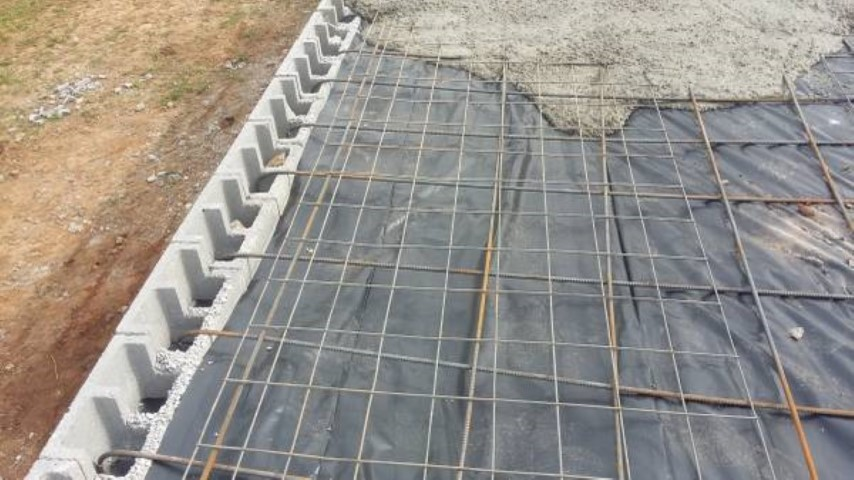

Engineered Retaining Walls Built for Strength & Drainage in Melbourne
A retaining wall does far more than frame a garden bed—it holds back thousands of pounds of saturated soil and hydrostatic water pressure. When a retaining wall is built without a frost-depth footing, proper geogrid tie-backs, or behind-wall drainage, it inevitably leans, bulges, and fails within a few seasons.
At Clacy Concrete, we design and build long-lasting concrete retaining walls for residential and commercial properties throughout Melbourne, VIC, and Gippsland & South East Melbourne. Whether you need to level a steep backyard for a new patio, protect a driveway edge from erosion, or replace a rotting railroad-tie wall, we engineer every wall from the footing up.

Retaining Wall Systems We Install
Every slope and architectural style calls for the right retention method. Our team installs two primary concrete retaining wall systems:
- Segmental Concrete Block Retaining Walls: Interlocking high-density architectural blocks available in tumbled stone, split-face, and smooth modern textures. Ideal for curved garden walls, tiered landscaping, and residential terraces.
- Poured-in-Place Concrete Retaining Walls: Steel-reinforced monolithic concrete walls poured on deep concrete footings. Ideal for tall structural walls, driveway retaining edges, and tight property lines requiring maximum lateral strength.
- Decorative & Seating Walls: Low-profile retaining walls with bullnose capstones that double as permanent perimeter seating around fire pits and concrete patios.
Why Behind-the-Wall Drainage Is Non-Negotiable
Water is the number one enemy of any retaining wall. When rain saturates clay or loam soil behind a wall, the weight against the structure doubles—and during Melbourne freezes, trapped water expands with tremendous force. Clacy Concrete prevents hydrostatic buildup on every retaining wall project through a multi-layer drainage system:
- Compacted Crushed-Stone Footing Trench: Ensures a level, frost-stable foundation beneath the base course.
- Perforated Drain Pipe (French Drain): Installed at the base behind the wall and sloped to daylight or a storm discharge point.
- Clean Gravel Backfill Column: A 12-inch-minimum zone of washed #57 angular stone directly behind the wall so water drops rapidly to the drain pipe.
- Geotextile Filter Fabric: Separates native soil from the drainage gravel so silt never clogs your drain system.
- Geogrid Reinforcement Layers: For taller walls, high-tensile geogrid sheets extend into the compacted backfill, locking the wall and soil mass together as one unified structure.
Common Retaining Wall Applications in Melbourne, VIC
Homeowners and property managers call Clacy Concrete for hillside terracing, walkout basement grading, driveway culvert and slope stabilization, pool-deck elevation walls, and replacing failing timber or cinder-block walls. If your wall exceeds local municipal height thresholds (often 3 to 4 feet depending on Melbourne codes), we coordinate engineering stamps and permitting so your project is 100% compliant.
We also integrate custom concrete steps, tiered planter beds, lighting conduits, and matching capstones directly into your retaining wall design so the finished structure looks like an intentional architectural feature rather than a utilitarian barrier. Before any excavation begins, our crew marks underground utilities, evaluates neighboring runoff patterns, and protects surrounding turf and trees.
Signs Your Existing Retaining Wall Needs Replacement
If you notice bowing blocks, widening vertical cracks, rotting railroad ties, water seeping through the wall face, or soil sinking behind the top course, waiting can lead to sudden collapse and costly foundation or driveway damage. Contact Clacy Concrete for an honest structural inspection in Melbourne or Gippsland & South East Melbourne and a clear, itemized replacement plan.